Semi Autonomous Driving using road signs and Collision Avoidance

Objective
The objective of this project is to develop a semi-autonomous vehicle which can detect different road signals and avoid dynamic obstacles (collision avoidance). YOLO algorithm is used to detect the road signals and classify the detected road sign. Based on the classification of the road signals, perform a predefined set of actions and make the robot follow a desired path and avoid dynamic obstacle in its path using the LIDAR data.
Changes from previous proposal
- Previously the idea was to use the YOLO algorithm only for object detection and get the results from YOLO and feed them into the custom CNN model for classification
- The assumption was YOLO is good at classifying objects with easily noticeable differences but not the road signals which look almost similar with subtle changes
- But after an attempt for object classification with YOLO, the results were found to be good. But the model was not able to correctly predict the road signals that were far from the camera.
- Few more images with road signs far from the camera were collected, trained and the performance of the model is excellent
- So the custom CNN model need not be trained and just YOLO can be used for both the road sign detection and classification
Scope
- This project lays a foundation to basic road sign detection and navigation.
- New and sophisticated algorithms can be embedded on top of this basic algorithm to extend the functionality of the robot and make it competely autonomous.
- The number of road signs can be increased to make the robot perform complex maneuvers.
Approach
- A dataset is created by collecting the images from the turtlebot oak-d camera with ten different road signs at different positions, orientations and lighting conditions.
- Bounding boxes are drawn manually around the road signs and labeled to be used for training the YOLOv5 model
- A YOLOv5 model is trained on the images and labels using the appropriate hyperparameters and the metrics are evaluated to determine the performance of the model.
- The YOLOv5 model with the best metrics is deployed on the Turtlebot.
- LIDAR data obtained from the Turtlebot is visualized in rviz2
- A subscriber is used to get the LIDAR data from the "/scan" topic and filter the LIDAR data to focus the front side of the Turtlebot (45° on both cw and ccw direction).
- The LIDAR node and YOLOv5 model are deployed along with the controller node to achieve semi autonomous driving
Workflow
The workflow of our project is shown in the flowchart below.
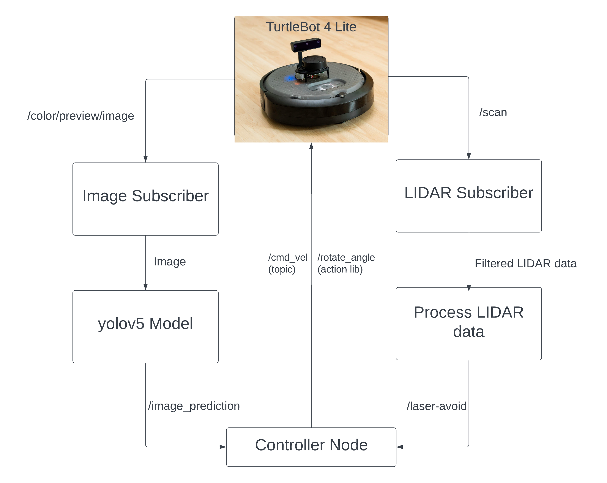- Subscribe to the camera topic "/color/preview/image" and send it to the YOLOv5 model to draw the bounding box and predict the output class of the image
- The predicted output is sent as a topic named "/image_prediction" to the controller node which controls the velocity of turtlebot using "/cmd_vel"
- Simultaneously another subscriber subscribes to the LIDAR topic "/scan".
- The node filters the LIDAR range data to 45° on both cw and ccw with origin as front center of the robot, performs operations based on a given a threshold value and sends back a boolean value to check for obstacles in front of the robot.
- A controller node subscribes to the topics "/image_prediction" and "/laser_avoid" and uses the velocity topic "/cmd_vel" to send linear velocity commands and the action lib "rotate_angle" to rotate the bot for a given angle
Data Collection
YOLOv5
YOLO (You Only Look Once) is a popular object detection and classification algorithm. It is very fast and efficient in detecting and classifying objects. YOLO is developed using pytorch and hence it is easier to implement the algorithm in pytorch rather than tensorflow and keras . Yolov5s (YOLO version 5) is used in this project . There are also different architectures of YOLOv5 as shown in the image

Creating a Dataset
The images are captured from the turtlebot4 oak-d camera. A subscriber node is used to subscribe to the "/color/preview/image" topic, convert the data from ros image format to opencv format and use the cv2.imwrite() function to save the image. Here is the link for the image subscribe and save node.
The dataset consists of 1800 images for training and 200 images for validation, equally distributed among the 10 classes of road signs. A sample for each class is shown in the image below.

The shape of the images are 300 by 150 pixels. The height and width of the images are chosen in a such a way that the oak-d camera can process it with minimum delay while maximizing the output width for a wider Field of View
The images must be labeled manually for the YOLO algorithm. The makesense.ai website is a handy tool to draw bounding boxes for images and label them. Inside the makesense site, click "GetStarted" and upload your images.
The image below shows the process of creating labels for the images.

Bounding boxes are drawn for the images and the appropriate labels are selected.

Click on "actions" followed by "export annotations" and export the labelled images as "A zip package containing files in YOLO format".

Unzip the file and add the labels to the dataset under labels folder. The dataset folder must be of a certain format for YOLOv5 to use the dataset.The format is as follows

A label is a text file that contains the class of the image (0,1,2,....) followed by the pixel values of the bounding box enclosing the feature in the image. Note that the images and the correspoding labels have the same file name, YOLO uses this format to match the images with labels.

Link to Dataset
Training a YOLOv5 model
Prerequisites
Download the required files for training YOLOv5 from the github repository. Link
The libraries required for training YOLOv5 are given under the downloaded "YOLOv5" folder as "requirements.txt". To install all the required libraries, run the following command while inside the "yolov5" folder.
pip3 install -r requirements.txtTraining the model
To train the model the dataset must be pointed to YOLOv5. A yaml file is created under yolov5/data and with the code as follows (the yaml files under the data folder can also be edited to create a new one)
# Train/val/test sets as 1) dir: path/to/imgs, 2) file: path/to/imgs.txt, or 3) list: [path/to/imgs1, path/to/imgs2, ..]
path: your_path/fullDataset # dataset root dir
train: images/train/ # train images (relative to 'path') 118287 images
val: images/val/ # val images (relative to 'path') 5000 images
# Classes
names:
0: bump
1: left_turn
2: left_Uturn
3: right_turn
4: right_Uturn
5: speed_10
6: speed_20
7: speed_30
8: stop
9: straightAdd the path to the dataset and edit the number of classes as per the requirements.
Before training the model let us look at the hyperparameters we will be using. By default yolo has its own hyperparameters under "data/hyp.scratch.yaml".We can also use other hyperpameter files under "data/hyps". We will be using "hyp.scratch-low.yaml", as the name suggests it does minor modifications (scratches), operations like flip the image up, flip the image left,mosaic,shear, scale etc on the images we train. We can also set the learning rate, momentum,weight decay etc on the hyperpameter file. Here is the hyperpameter file used to train the model
# YOLOv5 🚀 by Ultralytics, AGPL-3.0 license
# Hyperparameters for low-augmentation COCO training from scratch
# python train.py --batch 64 --cfg yolov5n6.yaml --weights '' --data coco.yaml --img 640 --epochs 300 --linear
# See tutorials for hyperparameter evolution https://github.com/ultralytics/yolov5#tutorials
lr0: 0.01 # initial learning rate (SGD=1E-2, Adam=1E-3)
lrf: 0.01 # final OneCycleLR learning rate (lr0 * lrf)
momentum: 0.937 # SGD momentum/Adam beta1
weight_decay: 0.0005 # optimizer weight decay 5e-4
warmup_epochs: 3.0 # warmup epochs (fractions ok)
warmup_momentum: 0.8 # warmup initial momentum
warmup_bias_lr: 0.1 # warmup initial bias lr
box: 0.05 # box loss gain
cls: 0.5 # cls loss gain
cls_pw: 1.0 # cls BCELoss positive_weight
obj: 1.0 # obj loss gain (scale with pixels)
obj_pw: 1.0 # obj BCELoss positive_weight
iou_t: 0.20 # IoU training threshold
anchor_t: 4.0 # anchor-multiple threshold
# anchors: 3 # anchors per output layer (0 to ignore)
fl_gamma: 0.0 # focal loss gamma (efficientDet default gamma=1.5)
hsv_h: 0.015 # image HSV-Hue augmentation (fraction)
hsv_s: 0.7 # image HSV-Saturation augmentation (fraction)
hsv_v: 0.4 # image HSV-Value augmentation (fraction)
degrees: 0.0 # image rotation (+/- deg)
translate: 0.1 # image translation (+/- fraction)
scale: 0.5 # image scale (+/- gain)
shear: 0.0 # image shear (+/- deg)
perspective: 0.0 # image perspective (+/- fraction), range 0-0.001
flipud: 0.0 # image flip up-down (probability)
fliplr: 0.0 # image flip left-right (probability)
mosaic: 1.0 # image mosaic (probability)
mixup: 0.0 # image mixup (probability)
copy_paste: 0.0 # segment copy-paste (probability)
Note that the probability for "flipud" and "fliplr" is 0.0, this is because flipping the images changes the meaning of the feature. For example , a right turn image will be trained as a left turn image, this confuses the model and makes the model ambiguous and unable to differentiate between the features. Depending on the application we must use proper hyperpameter. Now we are officially ready to train our model.
To train the model, run the train.py file under the yolov5 folder, followed by image size, batch size, epochs, the name of yaml file we just created along with the hyperpameter file name as command line arguments .
python train.py --img 320 --batch 16 --epochs 60 --data custom_data.yaml --weights yolov5s.pt --cache --hyp hyp.scratch-low.yamlThe model is trained and will be stored as a folder under "yolov5/runs" folder. The folder contains the weights (*.pt), results, metrics such as precison, recall, loss curves etc.
There are also some images of training batches, labelled images and model predictions from the validation set. One such batch is shown below
Results
Labelled Images
Predictions
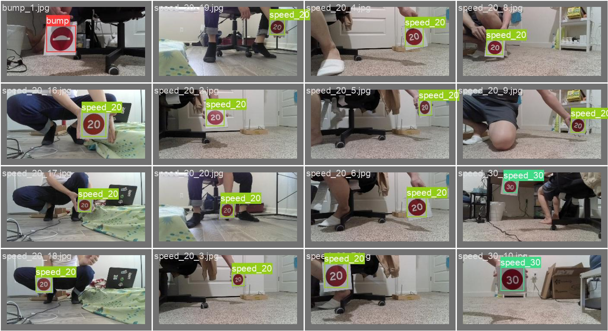 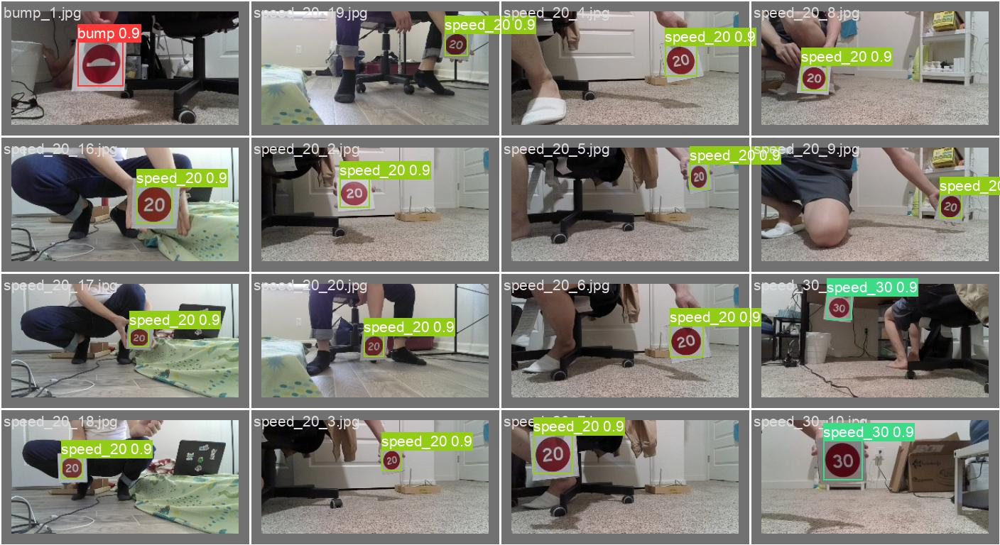The image below shows the confusion matrix for the trained model
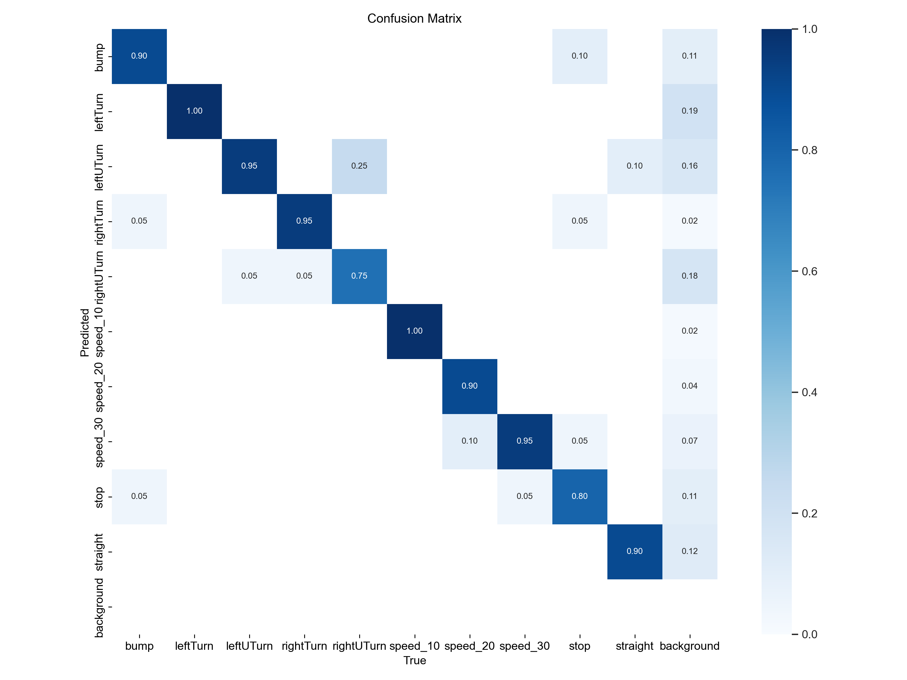From the confusion matrix, we can observe that the model confuses "right U turn" with the "left U turn". It was a bit hard for the model to classify turns, as the image shows 0.25 probabilty of of wrong classification between right turn, right U turn and bewteen left turn, left U turn .
The model also has some problem classifying the "stop" sign as it has only has a probability of correct prediction as 0.80.
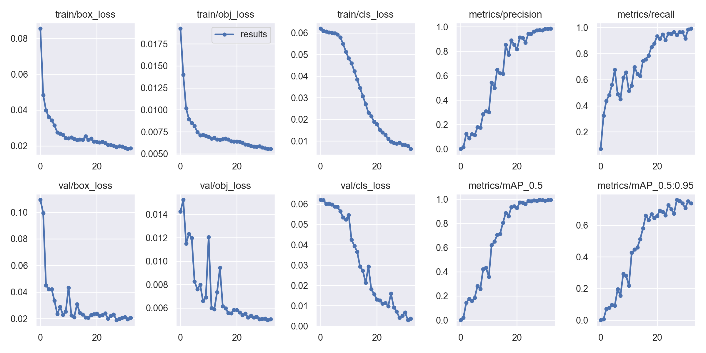The training loss curve has a smooth descend,there are some bumps in the validation loss curve but overall the loss curves look good
Note that there are 3 types of training and validation losses.
- box_loss — bounding box regression loss (Mean Squared Error).
- obj_loss — the confidence of object presence is the objectness loss.
- cls_loss — the classification loss (Cross Entropy).
Model Deployment
The trained weights are stored in a "*.pt" file. Under the "yolov5/runs/exp*/weights" there are two weight files from training, "best.pt" and "last.pt". The "best.pt" gives the weights of your model that gave the best during training and validation. The "last.pt" files gives you final weights of your trained model.
To use the model in a custom program, the weights must be loaded using torch.hub
import torch
from PIL import Image
img = Image.open(".//fullDataset//images//train//speed_10_10.jpg")
model = torch.hub.load('ultralytics/yolov5', 'custom', 'best.pt')
result = model(img)
result.show() #shows the predicted image
There are also other attributes that can be used with "results"
result.pandas().xyxy # Gives the xmin,xmax,ymin and ymax of the bounding box followed by the confidence score,class index and class name
result.pandas().xywh # Gives the xcenter,ycenter,width and height of the bounding box followed by the confidence score,class index and class name
result.pandas().pred # Outputs the same data as the above pandas dataframe, but with the tensor datatype. (excluding the class name)
result.names # Outputs a list of class names and indices on which the model is trained on.
result.n # Outputs the number of detected objects.
result.t # Outputs an array with the amount of time taken for each step of model prediction.Program
1. Import the required libraries
# import required python libraries
import torch
import rclpy
from rclpy.node import Node
from cv_bridge import CvBridge
import cv2
import numpy as np
# import required messages
from std_msgs.msg import String
from sensor_msgs.msg import Image
from std_msgs.msg import Int32MultiArray2. Create a class that inherits from ros2 Node, initialize the class variables, publisher and subscriber. Initialize an object to "CvBridge" which helps covert images in ros2 message to opencv format. Load the weights using torch.hub.load() function.
class ImageSubscriber(Node):
def __init__(self):
super().__init__('yolov5_node')
# create an object to subscribe /color/preview/image
self.image_subscriber = self.create_subscription(Image,'color/preview/image',self.listener_callback,10)
# create an object to publish the predicted image data
self.image_prediction_data_publisher = self.create_publisher(Int32MultiArray, '/image_prediction', 10)
self.image_prediction_data = Int32MultiArray()
self.br = CvBridge() # create an object for CvBridge(). CvBridge is used for converting image data from ros2 format to cv2 format
self.model = torch.hub.load('ultralytics/yolov5','custom','/home/nithish/nithish_ws/src/final_project/final_project/best.pt') # load the yolov5 model and weights
self.get_logger().info("Node Initialized")
# set the variables for cv2 functions
self.text_color = (0,255,255)
self.box_color = (100,0,255)
self.text_thickness = 1
self.box_thickness = 2
self.font = cv2.FONT_HERSHEY_SIMPLEX
self.fontScale_for_classes = 0.5
self.fontScale_for_confidence_score = 0.45
# dictionary to map class numbers to class names
self.class_names = {0:'bump',1:'leftTurn',2:'leftUTurn',3:'rightTurn',4:'rightUTurn',5:'speed_10',6:'speed_20',7:'speed_30',8:'stop',9:'straight'}
2. Use the subscriber callback function to get the image frame, convert it to cv2 image format, predict the class using the trained model, use cv2 to put class names and draw bounding boxes on images and publish the predicted results in the "/image_prediction" topic.
def listener_callback(self, data):
#self.get_logger().info("Got Image")
current_frame = self.br.imgmsg_to_cv2(data) # convert from ros2 format to cv2 format
processed_image = self.model(current_frame) # model prediction
result = processed_image.pandas().xyxy # convert the result to pandas dataframe
if (not(result[0]['class'].empty)):
# this if condition is to avoid error when a road signal is not detected
index_number = np.argmax(result[0]['xmax'].values-result[0]['xmin'].values) # if there are multiple road signs in an image, there will more than one class. So the class with the largest bounding box needs to be found and assigned to this variable
# unpack x_min, y_min, x_max, y_max from the pandas dataframe
x_min = int(result[0]['xmin'][index_number])
y_min = int(result[0]['ymin'][index_number])
x_max = int(result[0]['xmax'][index_number])
y_max = int(result[0]['ymax'][index_number])
class_number = int(result[0]['class'][index_number])
confidence_score = result[0]['confidence'][index_number]
start_point = (x_min,y_min)
end_point = (x_max,y_max)
# draw bounding box of the prediction on the output image
image = cv2.putText(current_frame, self.class_names[class_number], (x_min,y_min-5), self.font, self.fontScale_for_classes, self.text_color, self.text_thickness, cv2.LINE_AA)
image = cv2.putText(current_frame, str(round(confidence_score,3)), (x_min,y_max+15), self.font, self.fontScale_for_confidence_score, self.text_color, self.text_thickness, cv2.LINE_AA)
image = cv2.rectangle(current_frame, start_point, end_point, self.box_color, self.box_thickness)
if confidence_score>=0.6:
# publish the image_prediction_data only if the confidence_score is greater than 0.6
self.image_prediction_data.data = [class_number, x_min, x_max]
self.image_prediction_data_publisher.publish(self.image_prediction_data)
else:
# if there is no roadsign just output the current frame
image = current_frame
cv2.imshow("Image", image)
cv2.waitKey(10)3. Create a main function, instantiate the class object and spin the node
def main(args=None):
rclpy.init(args=args)
image_subscriber = ImageSubscriber()
rclpy.spin(image_subscriber)
image_subscriber.destroy_node()
rclpy.shutdown()
if __name__ == '__main__':
main()
Collision Avoidance
Idea
- The idea behind obstacle avoidance is to use the LIDAR data and stop the turtlebot when facing an obstacle.
- The turtlebot must move only after the obstacle is removed.
- The 360° LIDAR data is narrowed to 90° facing the front side of the turtlebot as shown in the image.
- A threshold is set for the range value based on some experiments, the LIDAR data is filtered with the thereshold and a single bool value is generated.
- The boolean value is used to check if the presence of an obstacle

Visualize LIDAR data
The LIDAR data is published under the "/scan" topic. To publish the "/scan" topic run the launch file as show below
ros2 launch turtlebot4_bringup rplidar.launch.pyOpen rviz2 by typing "rviz2" in the linux terminal
To plot the LIDAR data the "Fixed Frame" must be changed from "map" to "rplidar frame".
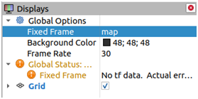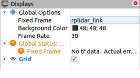Click on "add" , switch to "By topic" tab and select the "/scan" topic.
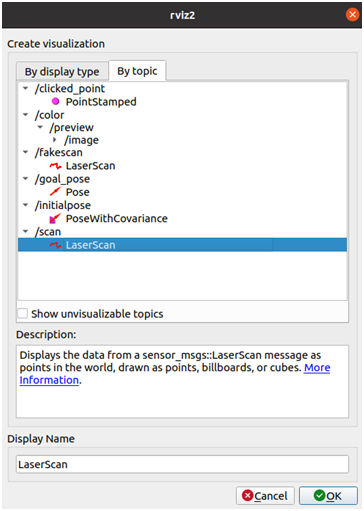
It is also recommended to increase the "Size" parameters on the left tab to make the points more bigger and visible. The image below shows the LIDAR data in rviz2
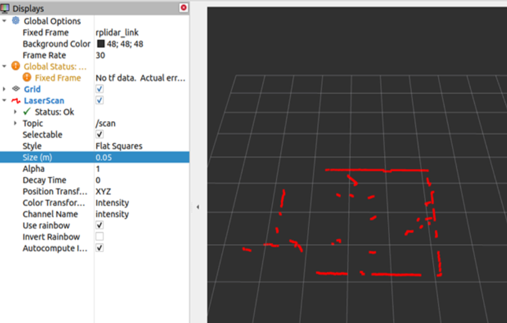Program
1. Import the required libraries and ros2 messages
# import required python libraries
import rclpy
from rclpy.node import Node
import numpy as np
import math
# import required messages
from sensor_msgs.msg import LaserScan
from std_msgs.msg import Bool2. Initalize the class variables, ros2 messages,timer functions, publishers, subscribers and flag variables
class ReadingLaser(Node):
def __init__(self):
super().__init__('reading_laser')
# create an object to subscribe /scan topic
self.laser_subscriber= self.create_subscription(LaserScan,'/scan',self.laser_callback,10)
# create objects for /fakescan and /laser_avoid ('/fakescan has laserscan data in a predefined range and /laser_avoid has the obstacle status')
self.fakescan_publisher = self.create_publisher(LaserScan, '/fakescan', 10)
self.obstacle_status_publisher = self.create_publisher(Bool, '/laser_avoid' , 10)
self.obstacle_status = Bool()
# create timers for calling fake_laser_callback and obstacle_status_callback functions
self.fake_laser_callback_timer = self.create_timer(0.2, self.fake_laser_callback)
self.obstacle_status_callback_timer = self.create_timer(0.2, self.obstacle_status_callback)
# initialize the variables
self.laser_data = None
self.filtered_laser_data = None
self.minimum_obstacle_detection_distance = 0.4
self.warnings_array = 0
self.total_no_of_warnings = 0
# initialize the counter and flags
self.obstacle_status_counter = 0
self.laser_detect_flag = 0
#initialize an index array to filter laser data
self.index = np.arange(90,270,dtype=int) 3. Add the laser callback function and use the created "self.index" to filter out the laser data from 45° to 135°.
The 0° of the LIDAR is not in the front center of the robot, the angle of front center is actually 90°. Also the resolution of the LIDAR is 0.5° so the index must be 90 to 270
def laser_callback(self,laser_msg):
# receives full laser data and filters specified range of laser data
self.laser_data = laser_msg
laser_point_data = np.array(self.laser_data.ranges)
self.filtered_laser_data = laser_point_data[self.index]
self.laser_detect_flag = 14. This part of the code is optional, this is to publish the filtered LIDAR data as a topic for vizualizing in rviz2.
def fake_laser_callback(self):
if self.laser_data != None:
# Publishes specified range of laser data
laser_scan = LaserScan()
laser_scan.header.stamp = self.laser_data.header.stamp
laser_scan.header.frame_id = self.laser_data.header.frame_id
laser_scan.angle_min = self.laser_data.angle_min
laser_scan.angle_max = self.laser_data.angle_max
laser_scan.angle_increment = self.laser_data.angle_increment
laser_scan.time_increment = self.laser_data.time_increment
laser_scan.range_min = self.laser_data.range_min
laser_scan.range_max = self.laser_data.range_max
laser_scan.ranges = self.filtered_laser_data.tolist()
laser_scan.intensities = self.laser_data.intensities
self.fakescan_publisher.publish(laser_scan)
#self.get_logger().info('Publishing'%laser_scan.ranges)
5. The filtered LIDAR data consists of an array of distance values for the filtered angles, a threshold value is set for the range and the array is further filtered using the threshold value. Using numpy array simplifies the process as comparing a numpy array outputs a Boolean array. The number of "True" values in the boolean array is calculated using the np.sum() function, if the number of "True" values are greater that a set value (in our case it is 3) then there is an obstacle in the path of the robot.
def obstacle_status_callback(self):
# this function publishes obstacle status
if self.laser_detect_flag:
self.warnings_array = self.filtered_laser_data <= self.minimum_obstacle_detection_distance # all the filtered_laser_data <= minimum_obstacle_detection_distance will be saved in warnings_array in the form of True value
self.total_no_of_warnings = self.warnings_array.sum() # total number of Trues in warnings_array will be counted
if self.total_no_of_warnings > 3:
# if the total_no_of_warnings is atleast greater than 3, it is considered to be an obstacle
self.obstacle_status_counter = self.obstacle_status_counter+1 # obstacle_status_counter is used to avoid false trigger
if self.obstacle_status_counter >=1:
# the above threshold value (>=1) can be changed based on the robustness needed
self.obstacle_status.data = True
self.obstacle_status_publisher.publish(self.obstacle_status)
else:
self.obstacle_status.data =False
self.obstacle_status_publisher.publish(self.obstacle_status)
else:
self.obstacle_status_counter = 0
self.obstacle_status.data = False
self.obstacle_status_publisher.publish(self.obstacle_status)
6. Create an object for the class in the main function and spin the node
def main(args=None):
rclpy.init()
reading_laser = ReadingLaser()
reading_laser.get_logger().info("Laser laser_scanner")
rclpy.spin(reading_laser)
reading_laser.destroy_node()
rclpy.shutdown()
if __name__ == '__main__':
main()
Output
The following gif shows the original "/scan" topic and filtered "/fake_scan" topic in rviz2.

Integrating with Robot Motion
The YOLOv5 model is deployed succesfully with the turtlebot and LIDAR data is filtered to detect obstacles infront of the bot. Next step is to create a program to receive the topic "/image_prediction" from the YOLOv5 node and "/laser_avoid" topic from the LIDAR node to control the motion of the Robot.
Idea
- The topic "/image_predictions" from the yolov5 node is an array of 3 values, output class,minimum and maximum x pixel value of the bounding box.
- The xmin and xmax pixel value of the bouding box is used to calculate the width of the bounding box on the image.
- Each of ten signs will make the Robot perform unique actions. The actions assgined for each of the signs are listed in the table below
- The width of the bouding box is caculated every time a sign is detected. Once the Robot reaches close to a sign, the width of the box reaches a certain value (preset value), the robot ignores the sign and tries to find a different sign that is farther away.
- If no sign is detected then the Robot will remain idle
| Class index | Image | road sign | Action |
|---|---|---|---|
| 0 | 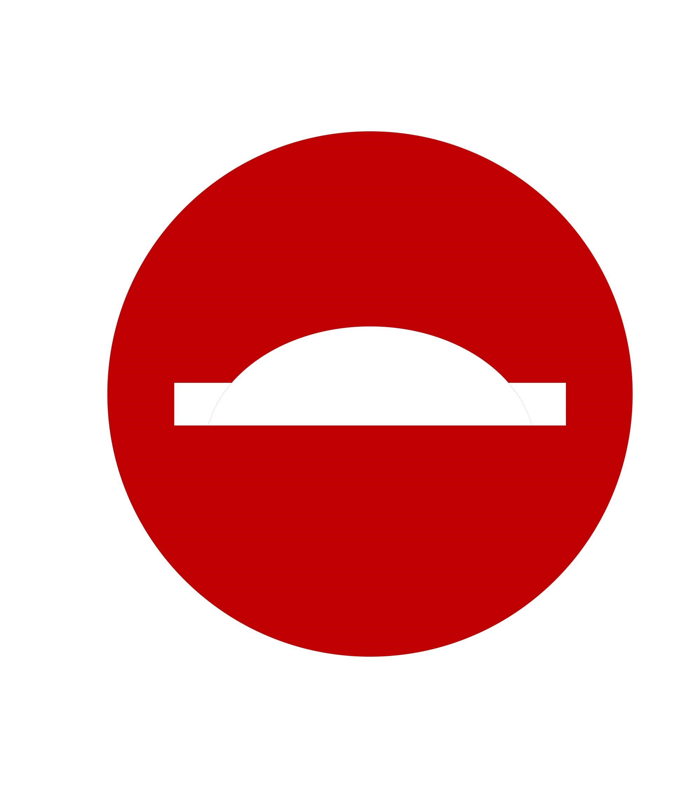 | Bump | Slow down |
| 1 | 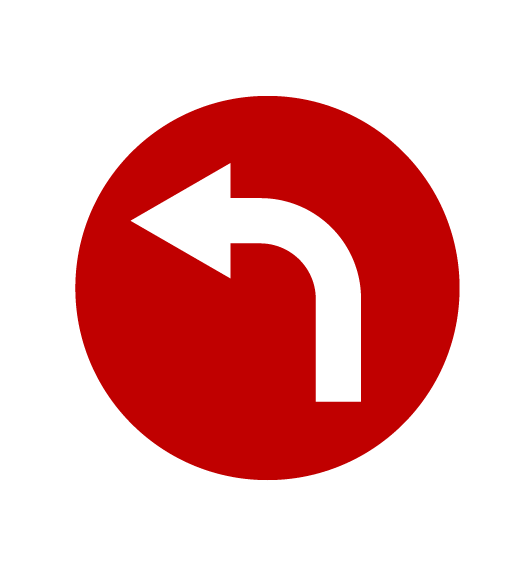 | Left Turn | Turn the robot 90° to the left |
| 2 | 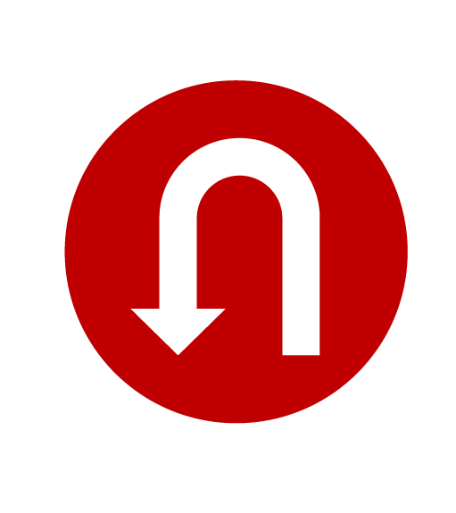 | Left U Turn | Turn the robot 180° to the left |
| 3 | Right Turn | Turn the robot 90° to the right | |
| 4 | 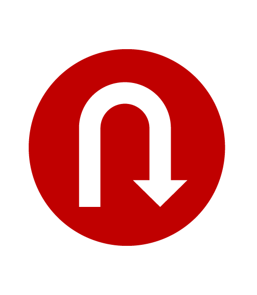 | Right U Turn | Turn the robot 180° to the right |
| 5 | Speed 10 | Move the robot at slow speed | |
| 6 | 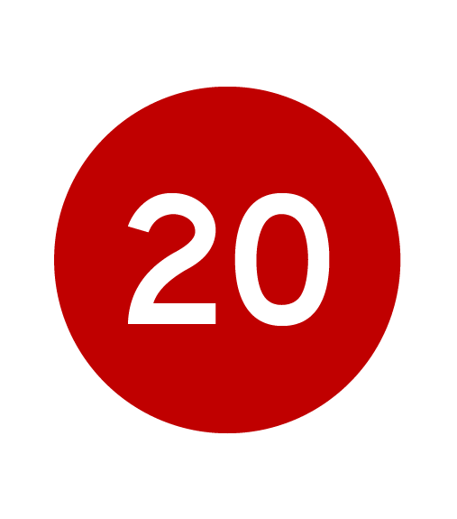 | Speed 20 | Move the robot at medium speed |
| 7 | 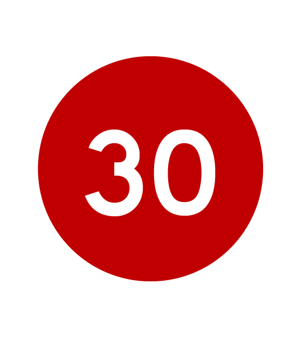 | Speed 30 | Move the robot at maximum speed |
| 8 | 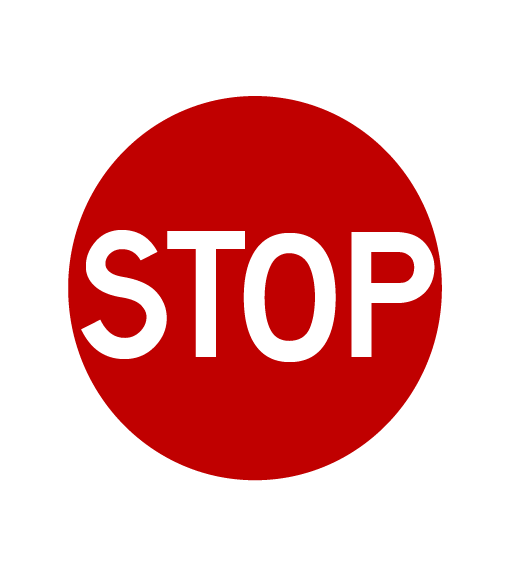 | Stop | Stop the robot after getting close to the sign |
| 9 | Straight | Move straight |
Program
1. We start the python program by importing the necessary libraries and messages
#import required python libraries
import rclpy
import math
from rclpy.node import Node
from rclpy.action import ActionClient
# import required messages
from std_msgs.msg import Int32MultiArray
from std_msgs.msg import Bool
from geometry_msgs.msg import Twist
# import RotateAngle from irobot_create_msgs.action
from irobot_create_msgs.action import RotateAngle2. Initalize the class variables, ros2 messages,timer functions, publishers, subscribers, action clients and flag variables
class RobotController(Node):
def __init__(self):
super().__init__("ControllerNode")
# create subscriber object for /image_prediction and /laser_obstacle_status topics
self.image_prediction_subscriber = self.create_subscription(Int32MultiArray,'/image_prediction',self.process_callback,10)
self.laser_subscriber = self.create_subscription(Bool,'/laser_avoid',self.collision_callback,10)
# create publisher object for /cmd_vel topic
self.velocity_publisher = self.create_publisher(Twist,"/cmd_vel",10)
self.velocity_msg = Twist() # create an object for Twist() message
# create an ActionClient object for rotate_angle
self._action_client = ActionClient(self, RotateAngle, 'rotate_angle')
# create a timer object to call the control_robot function
self.timer = self.create_timer(0.2, self.control_robot)
# initialize the flag variables
self.obstacle_status = False
self.robot_control_flag = False
self.robot_rotate_flag = True
self.velocity_msg.linear.x = 0.2 # initialize velocity in m/s
self.min_width = 45 # predefined width in pixel. Will be used for comparison with the bounding box width
The "self.robot_control" flag is used to make sure that the robot velocity is published only if the predictions from "/image_prediction" topic is received
3. Create the callback functions inside the class for the subscribers
def process_callback(self,img_prediction):
# extract data from image_prediction message and find the width
self.output_class = img_prediction.data[0] # Output class number
self.x_min = img_prediction.data[1] # x_min of the predicted bounding box
self.x_max = img_prediction.data[2] # x_max of the predicted bounding box
self.width = self.x_max-self.x_min # width of the predicted bounding box
self.robot_control_flag = True # robot_control_flag is used so that condition is checked only if new message is received. If robot_control_flag is not used, then even if new message is not received, the previous class number will be used and robot keeps moving
def collision_callback(self,obstacle_data):
# update obstacle_status. If there is an obstacle then obstacle_status becomes True
self.obstacle_status = obstacle_data.data
The "self.robot_control_flag" is set to true every time a message is received from the "/image_prediction" topic.
4. Create functions for Rotating the turtlebot using the "rotate_angle" action lib.
def send_goal(self, angle, max_rotation_speed):
# function to rotate the robot. The rotate functionality is provided by irobot_create3
goal_msg = RotateAngle.Goal()
goal_msg.angle = angle
goal_msg.max_rotation_speed = max_rotation_speed
self._action_client.wait_for_server()
self._send_goal_future = self._action_client.send_goal_async(goal_msg)
self._send_goal_future.add_done_callback(self.goal_response_callback)
def goal_response_callback(self, future):
goal_handle = future.result()
if not goal_handle.accepted:
self.get_logger().info('Goal rejected :(')
self.get_logger().info('Goal accepted :)')
self._get_result_future = goal_handle.get_result_async()
self._get_result_future.add_done_callback(self.get_result_callback)
def get_result_callback(self, future):
result = future.result().result
self.get_logger().info('Result: {0}'.format(result))
We use the message "irobot_create_msgs/action/RotateAngle" and action client from the "__init__" function to assign the angle value,rotation speed and send the message.
4. Finally create a function to control the Robot motion using the predictons and LIDAR data
def control_robot(self):
# Robot controller
if self.obstacle_status:
# if the obstacle_status is True, set the linear x velocity to zero
self.velocity_msg.linear.x = 0.0
self.velocity_publisher.publish(self.velocity_msg)
else:
# if the obstacle_status is False, then class number is checked and velocity command will be sent accordingly
if self.robot_control_flag:
if self.output_class == 9: # straight
self.robot_rotate_flag = True # set the robot_rotate_flag to True in all the if and elif conditions, only then the next rotate will work
self.velocity_msg.linear.x = 0.2
if self.width > self.min_width: # if width of predicted bounding box is greater than predefined min_width, stop the robot
self.velocity_msg.linear.x = 0.0
elif self.output_class == 8: # stop
self.robot_rotate_flag = True
self.velocity_msg.linear.x = 0.2
if self.width > self.min_width-5:
self.velocity_msg.linear.x = 0.0
elif self.output_class == 7: # speed_30
self.robot_rotate_flag = True
self.velocity_msg.linear.x = 0.35
if self.width > self.min_width:
self.velocity_msg.linear.x = 0.0
elif self.output_class == 6: # speed_20
self.robot_rotate_flag = True
self.velocity_msg.linear.x = 0.2
if self.width > self.min_width:
self.velocity_msg.linear.x = 0.0
elif self.output_class == 5: # speed_10
self.robot_rotate_flag = True
self.velocity_msg.linear.x = 0.1
if self.width > self.min_width:
self.velocity_msg.linear.x = 0.0
elif self.output_class == 4: # rightUTurn
if self.width<self.min_width:
self.robot_rotate_flag = True
self.velocity_msg.linear.x = 0.2
elif(self.robot_rotate_flag == True):
self.robot_rotate_flag = False # set the robot_rotate_flag to False, so that send_goal is called just once
self.send_goal(math.radians(-180.0),0.5)
elif self.output_class == 3: # rightTurn
if self.width<self.min_width:
self.robot_rotate_flag = True
self.velocity_msg.linear.x = 0.2
elif(self.robot_rotate_flag == True):
self.robot_rotate_flag = False
self.send_goal(math.radians(-90.0),0.5)
elif self.output_class == 2: # leftUTurn
if self.width<self.min_width:
self.robot_rotate_flag = True
self.velocity_msg.linear.x = 0.2
elif(self.robot_rotate_flag == True):
self.robot_rotate_flag = False
self.send_goal(math.radians(180.0),0.5)
elif self.output_class == 1: # leftTurn
if self.width<self.min_width:
self.robot_rotate_flag = True
self.velocity_msg.linear.x = 0.2
elif(self.robot_rotate_flag == True):
self.robot_rotate_flag = False
self.send_goal(math.radians(90.0),0.5)
elif self.output_class == 0: # bump
self.robot_rotate_flag = True
self.velocity_msg.linear.x = 0.05
if self.width > self.min_width+30:
# +30 is added on right side on relational operator to stop the robot little far from the stop sign. This is to avoid the false detection from the YOLO model when the camera is too close stop sign
self.velocity_msg.linear.x = 0.0
self.velocity_publisher.publish(self.velocity_msg) # publish velocity message
self.robot_control_flag = False
The "self.robot_control_flag" is set to False at the end of the function to wait for the flag to become True in the callback function.
5. Create a main function, create object for the class and call the spin function to stop the node from exiting
def main(args=None):
rclpy.init(args=args)
robot = RobotController() # create an object for RobotController class
rclpy.spin(robot)
robot.destroy_node()
rclpy.shutdown()
if __name__ == "__main__":
main()
Down below is the link to the entire package contaning all the python programs
Link